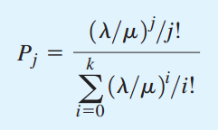
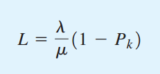
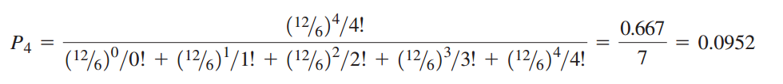
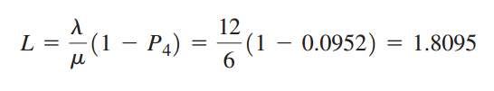

Definición.
Con G que denota una distribución de probabilidad general o no especificada de tiempos de servicio, el modelo apropiado en esta situación se conoce como modelo M/G / k con “clientes bloqueados eliminados”.
El modelo específico considerado en esta sección se basa en los siguientes supuestos:
- El sistema tiene k canales.
- Las llegadas siguen una distribución de probabilidad de Poisson, con tasa de llegadas.
- El tiempo de servicio de cada canal puede tener cualquier distribución de probabilidad.
- La tasa de servicios es la misma para cada canal.
- Una llegada entra al sistema sólo si por lo menos un canal está disponible. Una llegada que ocurre cuando todos los canales están ocupados es bloqueada, es decir, se le niega el servicio y no se le permite entrar al sistema.
Sin espera permitida, las características de la operación 𝐿𝑞 𝑦 𝑊𝑞 consideradas en modelos de línea de espera previos son automáticamente cero, sin importar el número de canales de servicio.
La consideración de diseño más importante implica determinar cómo se ve afectado el porcentaje de clientes bloqueados por el número de canales de servicio.

Probabilidades de estado estable que j de los k canales estaría ocupado:

- donde:
- λ=tasa de llegadas
- µ=tasa de servicios de cada canal
- k =número de canales
- Pj = probabilidad de que j de los k canales estén ocupados con j 0, 1, 2, . . . , k
Cantidad de unidades promedio en el sistema, es decir el número promedio de canales en uso:

Ejemplo de Aplicación.
Microdata Software, Inc., utiliza un sistema de ventas por teléfono para sus productos de software. Los posibles clientes hacen pedidos a Microdata por medio del número telefónico 800 de la empresa.
Suponga que las llamadas a este número telefónico llegan a razón de λ = 12 llamadas por hora. El tiempo requerido para procesar un pedido hecho por teléfono varía de forma considerable de un pedido a otro. Sin embargo, es posible que cada representante de ventas de Microdata atienda µ = 6 llamadas por hora.
En la actualidad, el número telefónico 800 dispone de tres líneas internas o canales, cada una operada por un representante de ventas distinto. Las llamadas recibidas en el número 800 se transfieren automáticamente a una línea o canal abierto si está disponible.
El tiempo medio de 2 min por cliente muestra que el empleado tiene una tasa promedio de servicio de µ = ½ = 0.50 clientes por minuto.
Siempre que las tres líneas están ocupadas, los llamadores reciben una señal de ocupado. En el pasado, la gerencia de Microdata suponía que los posibles clientes que recibían un tono de ocupado volverían a llamar.
Sin embargo, estudios recientes sobre ventas por teléfono demostraron que un número importante de posibles clientes a los que se les negaba el acceso, ya no volvían a llamar. Estas llamadas perdidas representan pérdida de ingresos para la empresa, por lo que la gerencia pidió que se analizará el sistema de ventas por teléfono.
En específico, la gerencia deseaba conocer el porcentaje de posibles clientes que obtenía señales de ocupado y que no tenía acceso al sistema.
Si la meta de la gerencia es contar con suficiente capacidad para atender a 90% de los posibles clientes, ¿cuántas líneas telefónicas y representantes de ventas debía utilizar Microdata?
La probabilidad de que las 3 líneas actualmente disponibles estén en uso y de que más posibles clientes no tengan acceso al sistema:

Suponga que Microdata amplía el sistema a cuatro líneas. Entonces, la probabilidad de que los cuatro canales estén en uso y de los llamadores sean bloqueados es:

El número promedio de llamadas en el sistema de cuatro líneas, y por tanto el número de líneas y representantes de ventas que estarán ocupados es:
